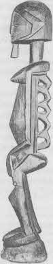

Levha IX. Kozmik Dans Tanrısı Şiva (Güney Hindistan).

Levha X. Androjen Ata (Sudan).
“Ve Tanrı insanı kendi suretinde, Tanrı suretinde yarattı; erkek ve dişi yarattı onları.”{214} İnsanın aklında Tanrı’nın suretinin doğasına ilişkin sorular uyanıyor, fakat yanıt metinde veriliyor ve oldukça açık. “Kutsal Olan, Şükürler olsun Ona, ilk insanı yarattığında, onu androjen yarattı.”{215} Dişinin başka bir biçime geçmesi kusursuzluktan ikiliğe düşüşün başlangıcını simgelemiş ve doğal olarak bunu iyilik ve kötülük ikiliğinin keşfi, Tanrı’nın toprağında yürüdüğü bahçeden sürgün ve sonra insanın (artık erkek ve kadın) Tanrıyı yalnız görmesini değil, hatırlamasını bile engelleyen, “karşıtların uyuşmasından{216} oluşmuş Cennet duvarının inşası gelir.
Bu birçok ülkede bilinen mitin İncil versiyonudur. Yaratılış esrarını simgelemenin temel yollarından birini gösterir; sonsuzluğun zamana geçmesi, birin ikiye ve birçoğa ayrılmasının yanı sıra ikinin bileşiminde yeni yaşamın doğuşu. Bu imge, kozmogonik çevrimin başlangıcında durur{217} cennet duvarının dağıldığı, tanrısal formun bulunup hatırlandığı ve bilgeliğin geri kazanıldığı andaki kahramanın görevinin sonuna uygundur.{218}
Kör kâhin Teiresias, hem erkek hem dişiydi: karşıt çiftlerin ışık- dünyasının bozuk biçimlerine kapalıydı, ama kendi iç karanlığında Oidipous’un kaderini gördü.{219} Şiva, vaktiyle eşi Şakti’yle -o sağ, kendisi sol yan olmak üzere- tek bir vücutta, Ardhanarişa, “Yarı Kadın Tanrı” olarak birleşmiş görünüyor.{220} Bazı Afrika ve Malinezya kabilelerinin atalara ait imgeleri, birinin üstünde annenin göğüslerini ve babanın sakal ve penisini gösteriyor.{221} Ve Avustralya’da, sünnet işlemini izleyen bir yıl içinde, tam erkeklik adayı ikinci bir törensel ameliyata girer -altyarık ameliyatı (penisin alt kısmında, siyeke açılan kalıcı bir yarık sağlamak için ufak bir kesik açılması). Kesiğe “penis rahmi” denir. Simgesel bir erkek vajinasıdır. Kahraman, tören sayesinde erkekten öte bir şey olur.{222}
Ayin boyası ve beyaz kuşun gerisini vücuda yapıştırmak için gereken kan, AvustralyalI babalar tarafından kendi altyarık deliklerinden alınır. Eski yaraları açıp akıtırlar.{223} Hem vajinanın aybaşı kanını ve erkeğin menisini, hem de sidik, su ve erkek sütünü simgeler. Akıntı, yaşlıların yaşam ve tazelenme kaynağına sahip olduklarını gösterir;{224} yani, onlarla tükenmez dünya çeşmesinin aynı olduğunu.{225}
Büyük Yılan Baba’nın çağrısı çocuğu kuşkulandırmıştı; anne korunmaydı. Fakat baba geldi. O bilinmeyenin gizleri için rehber ve erginleyendi. Baba, annesiyle yaşadığı cennete dışarıdan giren ilk kişi olarak çocuğun arketipsel düşmanıdır; bu yüzden, yaşam boyunca tüm düşmanlar (bilinçdışında) babanın simgesidir. “Öldürülen şey baba olur.”{226} İşte, (sözgelimi Yeni Gine’de) kafa avcısı toplulukların, kan davası baskınlarından eve getirdikleri başlara gösterdikleri saygı.{227} İşte, savaş yapmak için karşı konulmaz heves: babayı yok etme itkisi durmaksızın kendini kamusal vahşete dönüştürmektedir. Topluluğun ya da ırkın yaşlı erkekleri, kendilerini yetişen oğullarından totem ayinlerinin ruhsal büyüsüyle korurlar. Dev babayı canlandırırlar ve sonra kendilerini besleyen anne olarak da gösterirler. Yeni ve daha geniş bir cennet kurulur böylece. Ama bu cennet, kendilerine olan saldırganlığın hâlâ düzenli olarak yansıtıldığı geleneksel düşman kabileleri ya da ırkları içermez. “Kötü” dışa atılır ve püskürtülürken, “iyi” baba-anne mutluluğunun tamamı eve saklanır: “Kimdir bu sünnetsiz Filistinli, yaşayan Tanrı’nın ordularını küçümsüyor?”{228} “O düşmanı takip etmekte gevşeklik göstermeyin: eğer siz acı çekiyorsanız, onlar da sizin acı çektiğiniz gibi acı çekmektedirler; üstelik siz Allah’tan, onların ummadıkları şeyleri ummaktasınız.”{229}
Totemler, kabilesel, ırksal ve saldırganca misyoner tapımlar, nefretin aşkla yer değiştirmesi biçimindeki psikolojik soruna ancak kısmi çözümler sunar; ancak kısmen erginleştirirler. Ego onlarda sönmez, tersine, büyür; sırf kendini düşünmek yerine, birey kendi toplumunun tümüne adanır. Bu arada dünyanın geri kalanı (yani, insanlığın olabildiğince büyük kısmı) yakınlık ve korumasının dışında kalır, çünkü tanrısının koruması dışında kalır. Ve o zaman tarih sayfalarının görkemle anlattığı aşk ve nefret ilkelerinin şu dramatik kopuşu gerçekleşir. Fanatik, kendi kalbini temizlemek yerine dünyayı temizlemeye çalışır. Tanrı Devleti’nin yasaları ancak topluluğundakilere (kabile, kilise, ulus, sınıf ya da her neyse) uygulanırken, gelişmemiş, barbar, dinsiz, “yerli” ya da yabancı sayılıp komşu konumunda olanlara (açık bir bilinçle ve gerçekten de dindarca bir hizmet duygusuyla) daimi bir kutsal savaş açılır.{230}
Dünya birbirlerine destek olan topluluklarla doludur: toteme, bayrağa ve partiye tapanlar. Hıristiyan olduğu söylenen uluslar bile -bir “Dünya” kurtarıcısını izledikleri varsayılır-, açıkça kabul ettikleri Yüce Efendileri tarafından öğretilen egonun, egonun dünyasının, egonun kabile tanrısının tümüyle fethi demek olan herhangi bir sevgi gösterisinden çok sömürgeci barbarlıkları ve öldürücü çekişmeleriyle geçmişlerdir tarihe: “Size söylüyorum: Düşmanlarınızı sevin, sizden nefret edenlere iyilik edin, size lanet edenleri kutsayın ve size hakaret edenler için dua edin. Bir yanağına vurana öbürünü de uzat ve senin abanı alandan gömleğini esirgeme. Senden her isteyene ver ve senin eşyanı alandan geri isteme. İnsanların size ne yapmalarını istiyorsanız, siz de onlara öyle yapın. Eğer sizi sevenleri severseniz, ödülünüz ne olur? Çünkü günahkârlar da kendilerini sevenleri sever. Eğer size iyilik edenlere iyilik ederseniz, ödülünüz ne olur? Çünkü günahkârlar da öyle yapar. Eğer kendilerinden almayı umduğunuz kimselere ödünç verirseniz, ödülünüz ne olur? Günahkârlar bile günahkarlara karşılığını almak üzere ödünç verir. Fakat düşmanlarınızı sevin, onlara iyilik edin ve hiç ümitsiz olmayarak ödünç verin; karşılığınız büyük olacaktır; ve siz Yüce Olanın çocukları olacaksınız; çünkü o, nankörlere ve kötülere karşı nimet vericidir. Babanız nasıl merhametliyse, siz de öyle merhametli olun.”{231}
Dünya arketiplerindeki dinsel, kabilesel ya da ulusal olarak dar kafalılığımızla sınırlanmış önyargılardan kurtulduğumuz zaman, en yüce erginlenmenin, sadece, saldırganlığı daha sonra kendilerini savunmak için komşularına yansıtan yerel anne babalarımızınki olmadığını anlamak olası olur. Dünya Kurtarıcısı’nın getirdiği ve çoğu kimsenin duymaya istekli, yaymaya gönüllü, ama açıkça göstermeye isteksiz olduğu müjdeler, Tanrı’nın sevgi olduğu, sevilen olduğu ve olması gerektiği ve eksiksiz herkesin onun çocukları olduğudur.{232} Aşai Rabbani ayininin ayrıntıları, tapınma teknikleri ve piskoposlara has örgütlenme yolları gibi (Batılı teologlara göre günümüzün başlıca din sorunları olan){233} görece önemsiz konular, temel öğretiye yardımcı sayılmadıkça bilgiççe tuzaklardır. Gerçekten de, öyle sayılmadıkları yerlerde geriletici bir etkileri vardır: baba imgesini yeniden totem ölçülerine indirgerler. Ve bu, tam da Hıristiyan dünyanın her yerinde olan şeydir. İnsan, Babanın aramızdan en çok hangimizi yeğlediğini bilmek ya da buna karar vermek için çağrıldığımızı sanabilir. Fakat, öğreti çok daha yalındır: “Yargılama ki yargılanmayasın.”{234} Dünya Kurtarıcısı’nın haçı, yetkili rahiplerinin davranışlarına rağmen, yerel bayraktan çok daha demokratik bir simgedir.{235}
Hıristiyanlık geleneğinin dünya kurtarıcı simge ve sözcüklerinin sonul -ve eleştirel- etkilerinin kavranışı, Az. Augustinus’un Civitas Diaboli’ye [Şeytanın Yasası] karşı Civitias Dei'nin [Tanrının Yasası] kutsal savaşını ilan etmesinden bu yana geçen kargaşalı yüzyıllar boyunca öylesine çarpıtılmıştır ki, bir dünya dininin (yani, evrensel bir sevgi öğretisinin) anlamını öğrenmek isteyen çağdaş düşünür, zihnini diğer büyük (ve çok daha eski) evrensel dindaşlığa yöneltmelidir: yani, ilk sözün hâlâ barış, tüm canlılar için barış olduğu Buddha’nmkine.{236}
Sözgelimi şair-aziz Milarepa’nın iki ilahisinden alman şu Tibet dizeleri, Papa II. Urbanus ilk haçlı seferini vazettiği sırada yazılmıştı:
Altı Dünya Yüzünün Hayaller Şehrinin Ortasına
Asıl neden kötü işlerden gelen günah ve karanlık;
Orada varlık hoşlandığı ve hoşlanmadıklarının emirlerini izledi,
Ve Eşitliği tanıyacak zamanı hiç olmadı:
Uzak dur, Ey Oğlum, hoşlandığın ve hoşlanmadıklarından.{237}
Eğer Her Şeyin Boşluğunu fark edersen, kalplerinize Acıma dolacak;
Kendinizle başkaları arasındaki ayrımları kaybederseniz, başkalarına hizmete layık olacaksınız;
Ve başkalarına hizmet ederken zafere ulaşacaksınız, o zaman benimle karşılaşacaksınız;
Ve beni bularak, Buddhalık elde edeceksiniz.{238}
Barış her şeyin kalbidir, çünkü Avalokiteşvara-Kwannon, yüce Bodhisatva, Sınırsız Sevgi (ayrım gözetmeden) her duyarlı varlığı kapsar, gözetir ve içinde yaşar. Bir böceğin nazik kanatlarının mükemmelliğinin zamanla bozulmasını gözetir - onların hem mükemmelliği hem de bozulması odur. Kendine işkence eden, yanlış yola yönelmiş, kendi hafif deliliğinin ağına dolaşmış, hayal kırıklığına uğramış, ama içinde keşfedilmemiş, tamamen yararlanılmamış kurtuluş gizine sahip olan insanın sürekli acı çekmesi: bunu da gözetir ve bu odur. İnsanın tepesinde melekler; aşağısında demonlar ve mutsuz ölüler: bunların hepsi mücevher ellerinin ışınlarıyla Bodhissatva’ya çekilir ve onlar o, o da onlardır. Sınırlı, engellenmiş bilinç merkezleri katman katman varoluşun her düzleminde (yalnız Samanyolu’yla sınırlı mevcut evrende değil, ama ötede, uzayın sınırlarına doğru), galaksiler ötesindeki galaksiyi, dünyalar ötesindeki dünyayı, hiçliğin zamandışı havuzundan oluşan, yaşama çıkan ve bir baloncuk gibi orada kaybolan: yeniden, yeniden: sayısız yaşam: hepsi acı çeken: her biri kendi gergin, sıkı halkasıyla bağlanmış, öldürme ve nefret etme ve zaferin ötesindeki barışı arzulama: bütün bunlar, özü Boşluğun özü olan Her Şeyi Gözeten’in geçici, fakat tükenmez uzun dünya düşünün çocukları, deli figürleridir: “Acımayla Aşağı Bakan Tanrı.”
Fakat ismin şu anlamı da vardır: “İçte Görünen Tanrı.”{239} Hepimiz Bodhisatva imgesinin yansımalarıyız. Acımızda acı çeken bu tanrısal varlıktır. Biz ve o koruyucu baba biriz. Bu arındırıcı kavrayıştır. Koruyucu baba karşılaştığımız sıradan adamdır. Ve bu yüzden bu aldırışsız, sınırlı, kendini savunan, acı çeken vücut kendini bir başkası - düşman- tarafından tehdit ediliyor gibi hissetse de, o da Tanrı’dır.
Dev bizi incitir, fakat kahraman, uygun “aday,” erginlenmeye “bir erkek gibi” girer: ve işte, bu babaydı: biz Onun içindeyiz ve O bizim içimizde.{240} Vücudumuzun sevgili, koruyan annesi bizi Büyük Yılan Babaya karşı savunamazdı; bize verdiği ölümlü, kırılgan vücut onun korkunç gücüne dönüştü. Fakat ölüm son değildir. Yeni yaşam, yeni doğum, yeni varoluş bilgisi (böylece yalnız bu bedende değil, tüm vücutlarda, Bodhisatva gibi dünyanın tüm bedenlerinde yaşarız) verilmiştir bize. O babanın kendisi bir ikinci doğuşun rahmi, annesiydi.{241}
Biseksüel tanrı imgesinin anlamı budur: erginlenme temasının gizemi odur. Anneden alınıp parça parça çiğnenir ve bütün değerli biçim ve varlıkları ancak bir şölenin parçaları sayan bir devin dünyaları yok eden vücudunda kayboluruz; ama sonra, mucizevi biçimde yeniden doğarak olduğumuzdan daha çok bir şey oluruz. Eğer Tanrı kabilesel, ırksal, ulusal ya da hizipçi bir arketipse, bizler onun davasının savaşçılarıyız; fakat eğer o evrenin kendisinin efendisiyse, bizler tüm insanların kim için kardeş olduğunu bilenler olarak ilerleriz. Ve her iki halde de, çocukluğun ebeveyn imgeleri ve “iyi” ve “kötü” fikirleri aşılmıştır. Artık arzu ve korku duymayız; korkulmuş ve arzulanmış olanızdır. Tüm tanrılar, Bodhisatvalar ve Buddhalar dünya lotusunun yüce sahibinin halesindeki gibi içimizde bulunmaktadır.
“Gel,” öyleyse, “ve Efendi’ye dönelim: o yaraladığından, o sağaltacak bizi; o vuracak ve yaramızı o saracak, iki gün sonra o canlandıracak bizi: üçüncü gün bizi yetiştirecek ve onun gözü önünde yaşayacağız. Sonra bilirsek, bu ancak Efendiyi bilmemizin sonucu olacaktır: ileri gidişi sabah gibi hazırdır; ve o bize yağmur gibi, dünyaya düşen ilk ve son yağmur gibi düşecek.”{242}
Bodhisatva’nın ilk olağandışılığının anlamı budur: varlığın androjen karakteri. Burada görünüşte birbirine karşıt iki mitolojik macera bir araya gelir: Tanrıçayla Karşılaşma ve Babanın Gönlünü Alma. Çünkü ilkinde erginlenen, er ile dişinin (Brihadarankaya Upanişad’da ifade edildiği gibi) “bir bezelyenin iki yarısı” olduğunu öğrenir;{243} İkincisinde ise Baba’nın, cinsiyet ayrılığının öncesinde kaldığı görülür: [Eril] “O” zamiri bir konuşma tarzı, Oğulluk miti silinmiş olana bir yol rehberiydi. Ve her iki durumda da bulmaya geldiği şeyin kahramanın kendisi olduğu anlaşılır (ya da anımsanır).
Bodhisatva mitindeki kayda değer ikinci olagandışılık yaşam ile - (gördüğümüz gibi) Bodhisatva’nın Nirvana’ya ulaşmasında simgelenen- yaşamdan kopma arasındaki ayrımın ortadan kalkmasıdır. Kabaca Nirvana, “Arzu, Düşmanlık ve Kuruntunun Üçkatlı Ateşinin Sönmesi” demektir.{244} Okur hatırlayacaktır: Bo Ağacı altındaki Yoldan Çıkarma efsanesinde (geride, s. 42-45) Geleceğin Buddhası’nın karşıtı Kama-Mara, yani “Arzu-Düşmanlık”, ya da “Aşk ve Ölüm”, kuruntu büyücüsüydü. Üçkatlı ateşin ve son sınavın, Nirvana’ya doğru en üst macerasında evrensel kahraman tarafından geçilecek en son eşik muhafızının güçlüklerinin bir kişileşmesiydi. Evreni harekete geçiren güç olan Üçkatlı Ateşin o son közünün kritik noktasına kendi içinde erişen Kurtarıcı, diğer insanlar gibi yaşamaya yönelik ilkel arzusunun - normal arzu ve düşmanlık güdülerine göre, görüngüsel hedef, sonuç ve araçların yanıltıcı buharında yaşama arzusunun- onu çevreleyen bir aynada yansır gibi olan son fantezilerini de geride bıraktı. İhmal edilen etin son öfkesi ona saldırdı. Ve bu her şeyin kaderini belirleyen andı; çünkü bir kor parçasından yeniden büyük bir yangın çıkabilirdi.
Bu oldukça sevilen efsane Doğu da mit, psikoloji ve metafizik arasında sağlanan yakın ilişkiye harika bir örnek oluşturmaktadır. Canlı kişileştirmeler, aklı, iç ve dış dünyaların birbirine bağlılığı öğretisine hazırlar. Şüphesiz okur, ruhun dinamiklerine ait bu kadim mitolojik öğretiyle çağdaş Freudyen okulun öğretileri arasındaki açık benzerlikten etkilenmiştir. Freud’a göre, yaşam isteği (eros ya da libido, Budist Kama, “arzu”ya karşılık) ve ölüm isteği (tharıatos ya da destrudo, Budist Mara, “düşmanlık ya da ölüm”le eşdeğer), bireyi yalnız içten harekete geçirmekle kalmayan, onun için çevresindeki dünyayı da canlandıran iki dürtüdür.{245} Dahası, arzu ve düşmanlıkların kaynağı olan bilinçdışında temellenmiş kuruntular, her iki dizgede de psikanalizle (Sanskritçe: viveka) ve aydınlanmayla (Sanskritçe: vidya) aracılığıyla dağıtılır. Yine de iki -geleneksel ve modern- öğretinin hedefleri tam olarak aynı değildir.
Psikanaliz, çevrelerine kendi gerçekdışı korkularının ve kararsız çekiciliklerin kişisel ağlarını ören, bilinçdışınca yanlış yönlendirilmiş arzu ve düşmanlıklara sahip aşırı acı çeken bireyleri iyileştirmeye yönelik bir tekniktir; bunlardan kurtulan hasta görece bir tatminle, ona kendi kültürünün sunduğu daha gerçekçi korkular, düşmanlıklar, erotik ve dinsel uygulamalar, iş girişimleri, savaşlar, oyalanmalar ve ev işlerine katılabilir. Fakat köy arazisinin ötesine yapılan zor ve tehlikeli yolculuğa bilerek çıkmış kişi için, bu meraklar da, hata üzerine temellenmiş görünür. Bu yüzden dinsel öğretinin hedefi bireyi yeniden yaygın yanılsamaya doğru sağaltmak değil, onu yanılsamadan tamamen koparmaktır; ve bu yalnızca arzu (eros) ve düşmanlığı (thanatos) yeniden düzenlemekle olmaz -çünkü bu ancak yeni bir yanılsama bağlamı yaratır-, ünlü Budist Sekizkatlı Yol yöntemine göre itkileri ta kökenine dek yok etmek de gerekir.
Doğru İnanç, Doğru Yönelimler,
Doğru Konuşma, Doğru Eylem,
Doğru Canlılık, Doğru Çaba,
Doğru Düşüncelilik, Doğru Yoğunlaşma.
En son “kuruntu, arzu ve düşmanlığın da yok edilmesiyle” (Nirvana) birlikte, zihin, düşündüğü şey olmadığını bilir: düşünce gider. Zihin gerçek halinde kalır. Ve burada vücut kayboluncaya dek barınabilir.
Yıldızlar, karanlık, bir lamba, bir hayalet, çiğ, bir köpük,
Bir düş, bir şimşek çakması ve bir bulut:
Yaratılan her şeye böyle bakmalıyız.{246}
Yine de Bodhisattva yaşamı terk etmez. Dikkatini (dilin ötesinde kaldığından, ancak “boşluk” denebilecek) düşünceyi aşan gerçeğin iç alanından, yine dışa, görüngüsel dünyaya çevirerek içinde bulduğu aynı varlık okyanusu olmadan algılar. “Biçim boşluktur, boşluk gerçekten de biçimdir. Boşluk biçimden farklı değildir, biçim de boşluktan farklı değildir. Biçim olan boşluktur; boşluk olan biçimdir. Aynı şey algı, ad, kavrayış ve bilgi için de geçerlidir.”{247} Kendini dayatan, kendini savunan, kendiyle ilgilenen eski egosunun yanılsamalarını terk ederek, aynı dinginliği içinde ve dışında duymaktadır. Dışarda tuttuğu şey, kendi ego, biçim, algılar, konuşma, kavrayışlar ve bilgi yolculuğunun dayandığı görkemli, düşünceyi aşan boşluğun görsel yanıdır. Ve kendi kabuslarının korkusuyla yaşayan kendinden korkan canlılar için merhametle doludur. Kalkar, onlara döner ve sayelerinde boşluk ilkesinin kendi basitliği içinde dışavurulmasını sağlayan egosuz bir merkez olarak onlarla birlikte yaşar. Ve bu, onun büyük “tutkulu eylemi”dir; çünkü bu eylemle, içindeki Üçkatlı Arzu, Düşmanlık ve Kuruntu Ateşi ölen kişinin kavrayışında gerçek, bu dünyanın Nirvana olduğu gerçeği ortaya çıkar. “Hüner dalgaları” böyle birinden hepimizin kurtuluşu için çıkar. “Bizim dünyadaki yaşamımız Nirvana’nın kendisinin bir eylemidir, aralarında en küçük bir ayrım yoktur.”{248}
123
124
125
Bu yüzden yaşama geri döndürmeyi hedefleyen çağdaş sağaltma çabasının, sonuçta kadim dinsel disiplinden beslendiği söylenebilir; ancak Bodhisatva’nın üzerinde dolaştığı daire geniştir; ve dünyadan ayrılma, bir hata olarak değil, en uzak dönemecinde evrensel çevrimin derin boşluğuna ilişkin aydınlanmanın kazanılacağı o soylu yola atılan ilk adım olarak görülür. Bu türden bir ideal Hinduizmde de kabul edilmiştir: yaşamda özgürleşen kişi (jivan mukta), arzusuz, merhametli ve bilge, “kalbi yogayla yoğunlaşmış, her şeyi eşit bakışla izleyen kişi, içinde tüm canlıları bulur ve tüm canlılarda da kendini bulur. Yaşamını nasıl yönlendirirse yönlendirsin, o kişi Tanrı’da yaşar.”{249}
Yirmi sekizinci Budist ata Bodhidharma’ya “ruhunu dinginleştirmesi” için başvuran Konfüçyüsçü bir alimin hikâyesi anlatılır. Bodhidharma sertçe yanıt verdi: “Onu yarat ve ben dinginleştireyim.” Konfüçyüsçü yanıtladı, “Sorun da bu, onu bulamıyorum.”